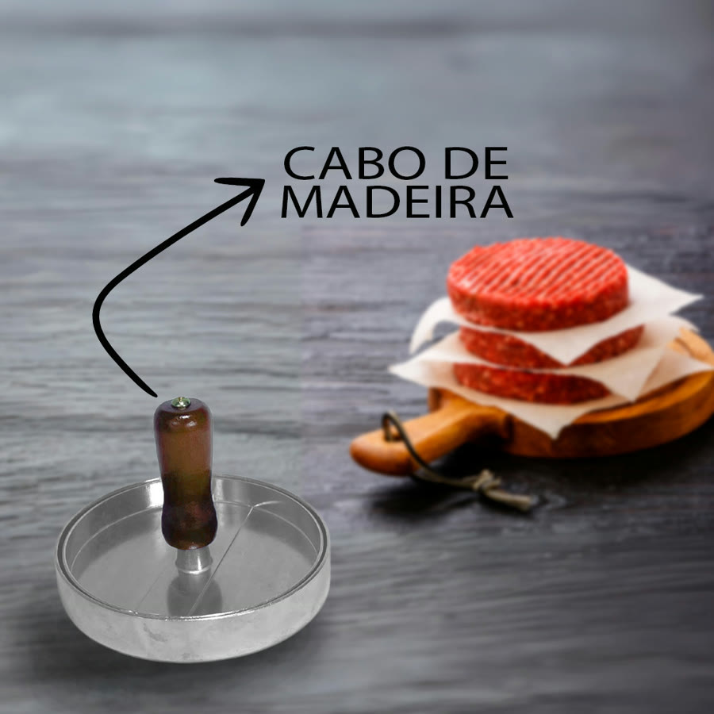
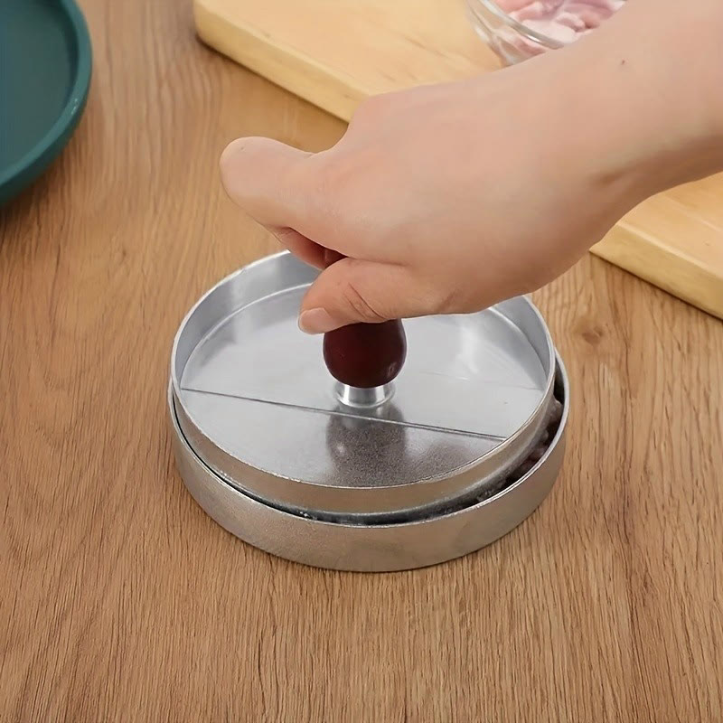
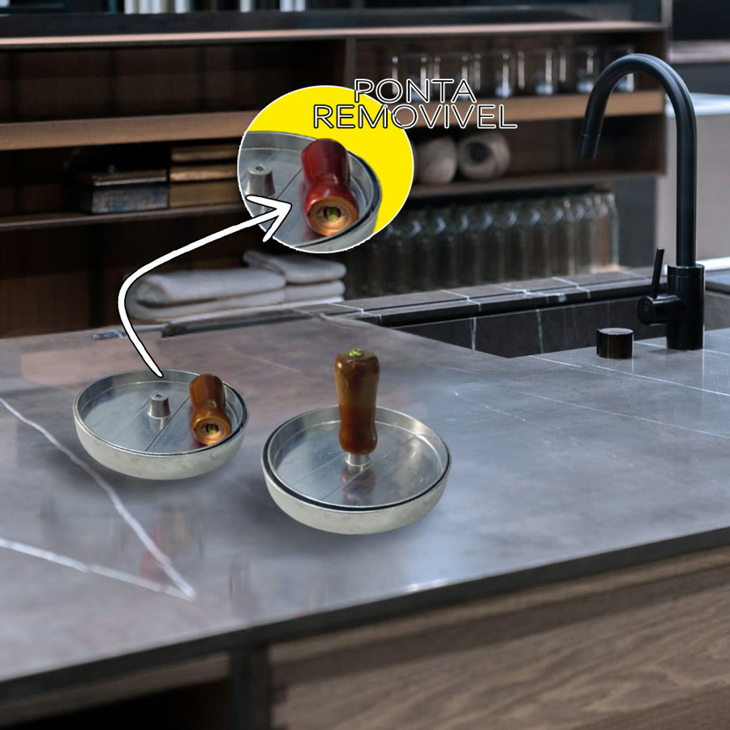
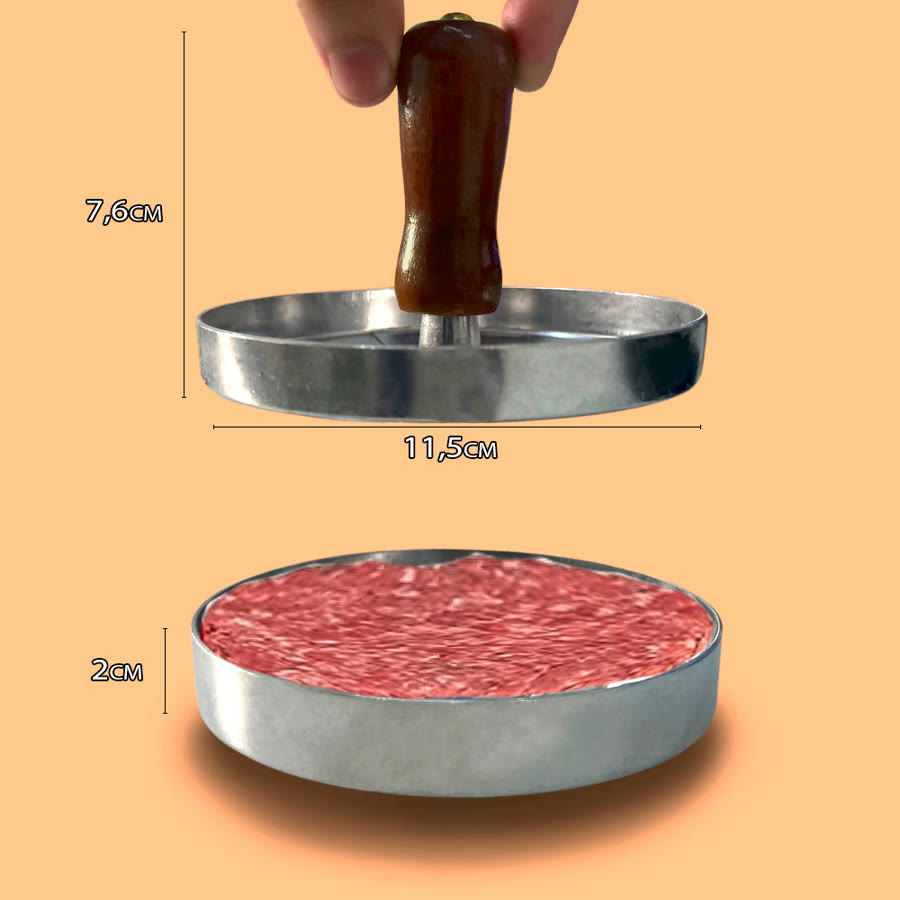
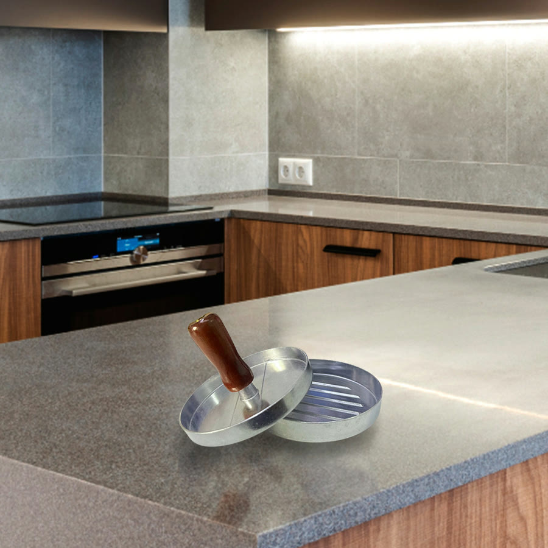
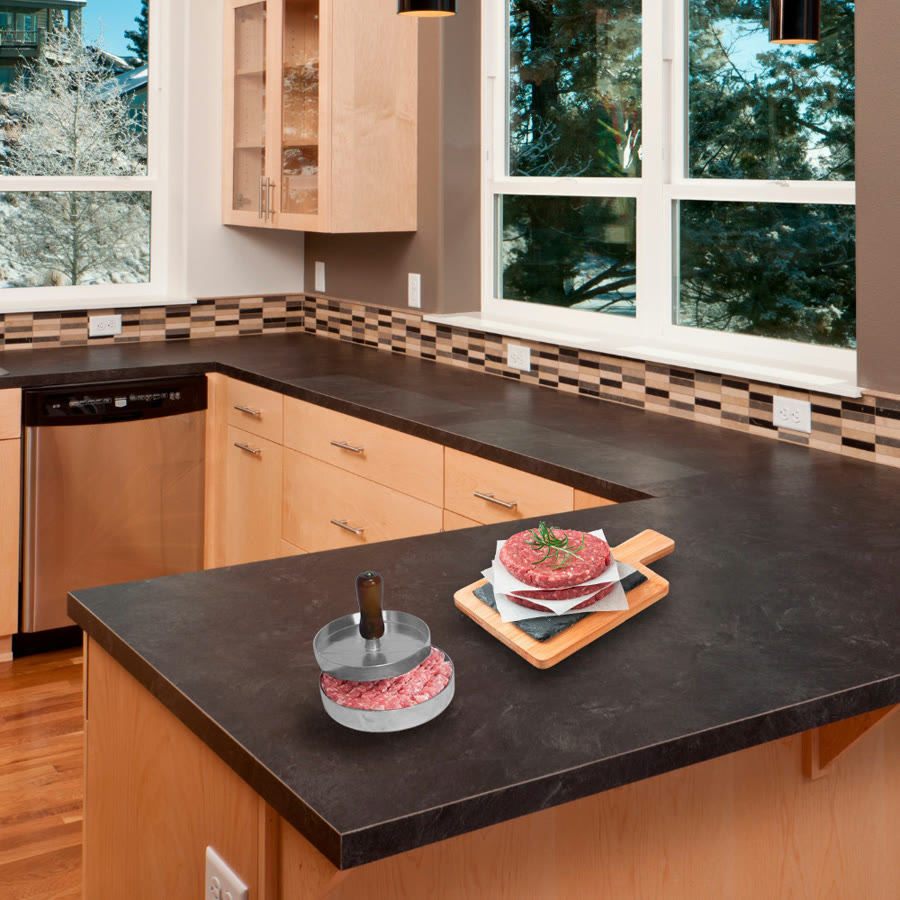
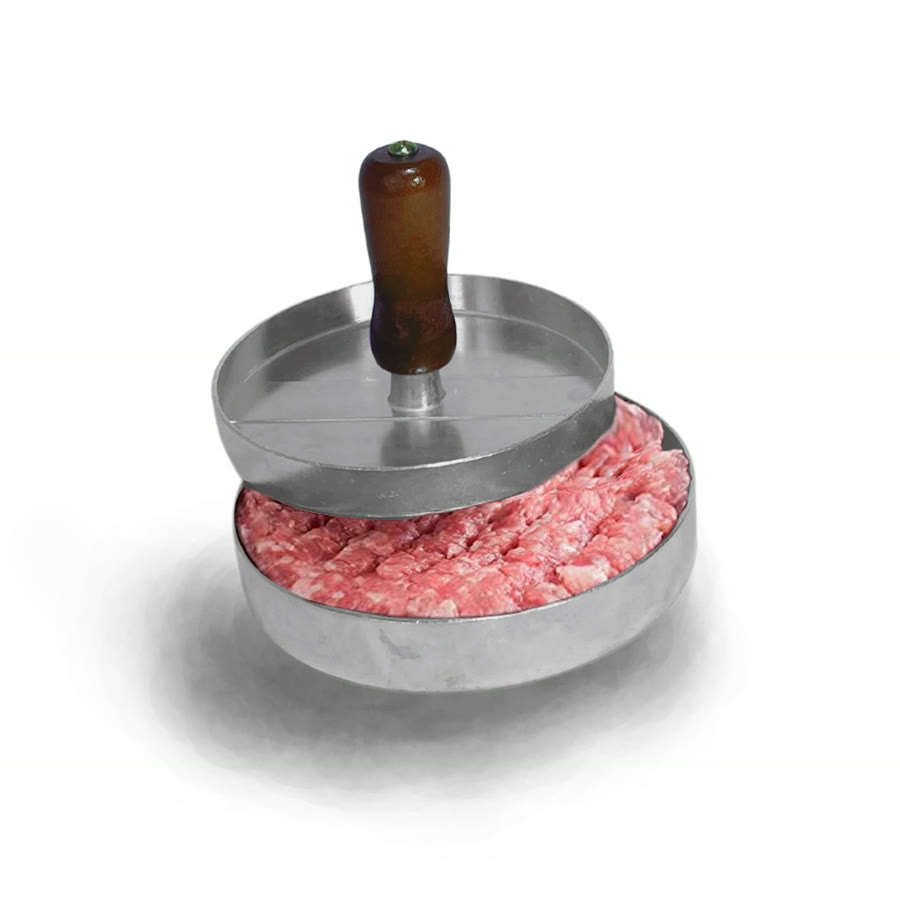

Achado nº 48
Prensa modeladora de hambúrguer caseiro








O que diz a página oficial do produto
- É uma forma modeladora de hambúrguer com duas peças: uma base redonda e uma prensa com cabo
- É de metal com cabo de madeira
- O uso é colocar a carne numa peça e pressionar com a outra
- Segundo o anúncio, o hambúrguer sai com frisos que ajudam a assar por igual
- Segundo o anúncio, dá para forrar com filme plástico ou papel manteiga para tirar e empilhar os hambúrgueres
- Pesa 130 g
- Na Shopee, tem nota 4,9 com mais de 4 mil avaliações e mais de 10 mil vendidos
Link de afiliado: se você comprar por ele, a Achadaria pode receber uma comissão, sem custo extra para você. Preço, estoque e entrega são da loja e podem mudar; confira lá antes de comprar.